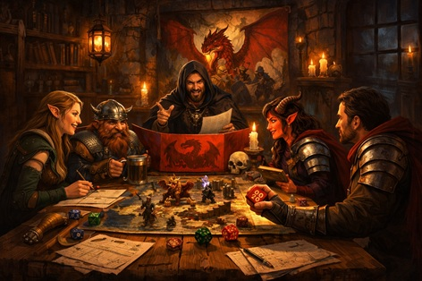
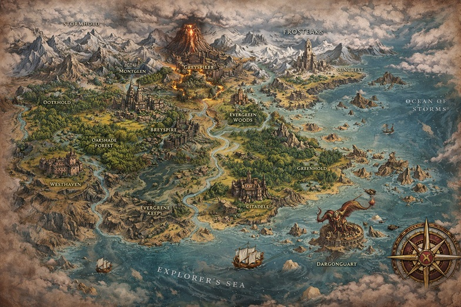
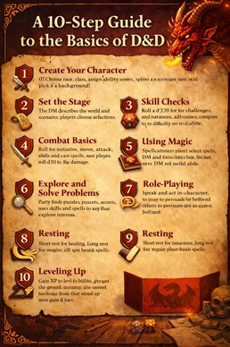

Welcome to Dungeons & Dragons!
Dungeons & Dragons, often called D&D, is a tabletop role-playing game where players work together to tell an exciting fantasy story. Instead of watching the story happen like in a movie or video game, you become part of it by creating a character and deciding what they do. One player acts as the Dungeon Master (DM), who describes the world, the people in it, and the challenges the group faces.
In D&D, you might explore ancient ruins, battle dragons, solve mysteries, or help a village in need. When your character tries something difficult or risky, you roll dice to see what happens. The results of the dice, along with your choices, shape the story as it unfolds.
The best part of Dungeons & Dragons is that there is no single way to play. You can focus on adventure, storytelling, teamwork, or creative problem solving. Whether you are a brave knight, a clever rogue, or a powerful wizard, every player helps create a unique adventure that no one has experienced before.
This website is dedicated to helping you learn the game of Dungeons & Dragons, covering both its rich history and how to play. Whether you’re completely new or just looking to deepen your understanding, you’ll find simple explanations, helpful guides, and useful tips to get you started. From learning the basics of creating a character to understanding how adventures unfold, this site is here to guide you every step of the way.

